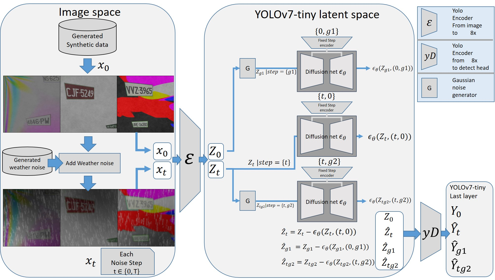
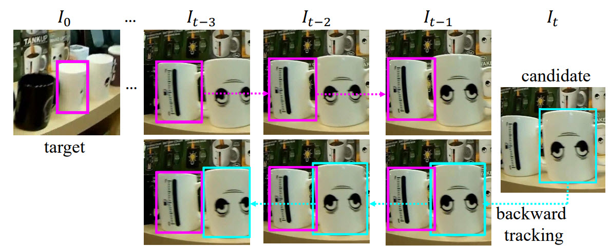

I am a Computer Vision Engineer with over nine years of experience in deep learning and video/image processing, currently working at the Institute of Information Science, Academia Sinica (Taiwan). My research focuses on visual modeling, temporal modeling, and generative vision, with applications in object detection and tracking, behavior recognition, and robust visual understanding under adverse conditions.
I have developed multiple state-of-the-art systems, including NeighborTrack, a lightweight single-object tracking method that achieved top performance on LaSOT and ranked #1 on UAV123, and LD-YOLOv7, a latent-diffusion-augmented license plate recognition framework that achieves strong synthetic-to-real generalization under rain and fog. Recently, I have been integrating Vision-Language Models and structured temporal models (S4/ViS4mer) to construct a Universal Action Space for long-term behavior analysis, and exploring SAM2 and GroundingDINO for unsupervised video object segmentation.
I received my M.S. degree in Electrical Engineering and a B.S. degree in Computer Information and Network Engineering from Lunghwa University of Science and Technology, graduating first in my department. My work bridges academic research and practical applications, with publications in CVPR Workshops and IEEE CAI.
For more detailed information about my professional and academic background, please see my CV. I am open to research discussions or collaboration opportunities; feel free to contact me at franktpmvu@gmail.com.
Developed a modular system for long-term behavior analysis using vision-only and vision-language models. Constructed a Universal Action Space from Kinetics-600, applied S4/ViS4mer for temporal modeling, and integrated SAM2 and GroundingDINO for unsupervised video object segmentation and foreground/background separation.
Designed a synthetic license plate generation pipeline with weather degradation (rain/fog) to improve recognition robustness without real data. Integrated Latent Diffusion into YOLOv7 to restore intermediate features and enhance performance in adverse weather. Achieved 87.38% on AOLP and strong synthetic-to-real generalization.
Proposed a lightweight module that leverages neighboring tracklets to reduce ID switches and improve tracking stability. Achieved 72.2% AUC on LaSOT and Ranked #1 on UAV123 until 2024.
Bounding box color legend: Red = Our method, Green = Ground Truth, Magenta = Others.
